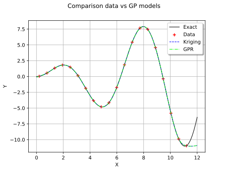
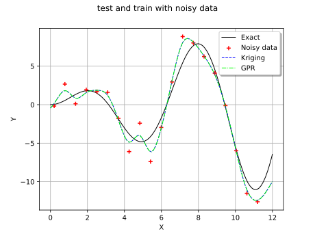
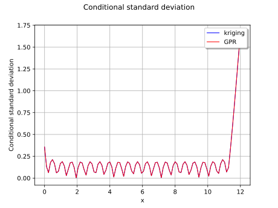
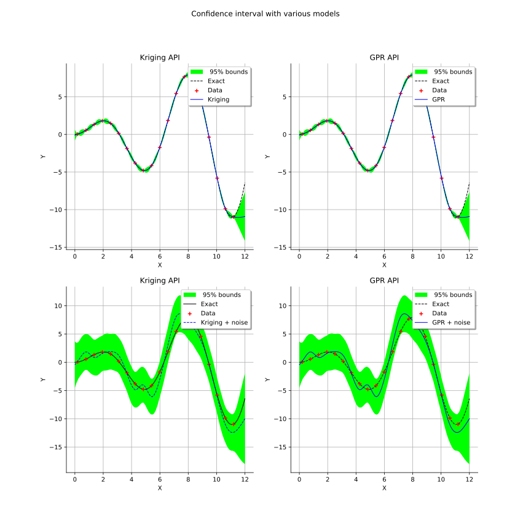
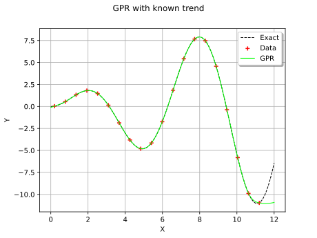

Note
Go to the end to download the full example code.
Gaussian Process Regression vs KrigingAlgorithm¶
The goal of this example is to highlight the main changes between the old API involving KrigingAlgorithm and the new one.
It assumes a basic knowledge of Gaussian Process Regression. For that purpose, we create a Gaussian Process Regression surrogate model for a function which has scalar real inputs and outputs. We select a very simple example.
Introduction¶
We consider the sine function:
![y = x \sin(x)]()
for any ![x\in[0,12]]() .
.
We want to create a surrogate of this function. This is why we create a sample of ![n]() observations of the function:
observations of the function:
![y_i=x_i \sin(x_i)]()
We are going to consider a Gaussian Process Regression with:
a constant trend,
a Matern covariance model.
import openturns as ot
import openturns.viewer as otv
First let us introduce some useful function. In order to observe the function and the location of the points in the input design of experiments, we define plot_1d_data.
def plot_1d_data(x_data, y_data, type="Curve", legend=None, color=None, linestyle=None):
"""Plot the data (x_data,y_data) as a Cloud/Curve"""
if type == "Curve":
graphF = ot.Curve(x_data, y_data)
else:
graphF = ot.Cloud(x_data, y_data)
if legend is not None:
graphF.setLegend(legend)
if color is not None:
graphF.setColor(color)
if linestyle is not None:
graphF.setLineStyle(linestyle)
return graphF
def computeQuantileAlpha(alpha):
"""
Compute bilateral confidence interval of level 1-alpha of a gaussian distribution.
"""
bilateralCI = ot.Normal().computeBilateralConfidenceInterval(1 - alpha)
return bilateralCI.getUpperBound()[0]
def computeBoundsConfidenceInterval(y_test_hat, quantileAlpha, conditionalSigma):
"""
Compute the 1-alpha confidence interval bounds.
"""
dataLower = [
[y_test_hat[i, 0] - quantileAlpha * conditionalSigma[i, 0]]
for i in range(n_test)
]
dataUpper = [
[y_test_hat[i, 0] + quantileAlpha * conditionalSigma[i, 0]]
for i in range(n_test)
]
dataLower = ot.Sample(dataLower)
dataUpper = ot.Sample(dataUpper)
return dataLower, dataUpper
g = ot.SymbolicFunction(["x"], ["x * sin(x)"])
xmin = 0.0
xmax = 12.0
n_train = 20
step = (xmax - 1 - xmin) / (n_train - 1.0)
x_train = ot.RegularGrid(xmin + 0.2, step, n_train).getVertices()
y_train = g(x_train)
n_train = x_train.getSize()
In order to compare the function and its metamodel, we use a test (i.e. validation) design of experiments made of a regular grid of 100 points from 0 to 12.
Then we convert this grid into a Sample and we compute the outputs of the function on this sample.
n_test = 100
step = (xmax - xmin) / (n_test - 1)
myRegularGrid = ot.RegularGrid(xmin, step, n_test)
x_test = myRegularGrid.getVertices()
y_test = g(x_test)
We plot the true function (continuous dashed curve) and train data (cloud points) on the same figure.
graph = ot.Graph("Function of interest", "", "")
graph.add(
plot_1d_data(x_test, y_test, legend="Exact", color="black", linestyle="dashed")
)
graph.add(
plot_1d_data(x_train, y_train, type="Cloud", legend="Train points", color="red")
)
graph.setAxes(True)
graph.setXTitle("X")
graph.setYTitle("Y")
graph.setLegendPosition("upper right")
view = otv.View(graph)

We use the ConstantBasisFactory class to define the trend and the MaternModel class to define the covariance model.
This Matérn model is based on the regularity parameter ![\nu=3/2]() .
.
dimension = 1
basis = ot.ConstantBasisFactory(dimension).build()
covarianceModel = ot.MaternModel([1.0] * dimension, 1.5)
In the following, we use the KrigingAlgorithm class to fit the Gaussian Process Regression model (aka Kriging).
kriging_algo = ot.KrigingAlgorithm(x_train, y_train, covarianceModel, basis)
kriging_algo.run()
kriging_result = kriging_algo.getResult()
krigingMM = kriging_result.getMetaModel()
We observe that the scale and amplitude hyper-parameters have been optimized by the run method.
The default optimization method (used here) is the TNC
With the new API, the GaussianProcessFitter class is used to fit the
gaussian process and GaussianProcessRegression to get the conditioned model.
fitter_algo = ot.GaussianProcessFitter(x_train, y_train, covarianceModel, basis)
fitter_algo.run()
fitter_result = fitter_algo.getResult()
gpr_algo = ot.GaussianProcessRegression(fitter_result)
gpr_algo.run()
gpr_result = gpr_algo.getResult()
gprMetamodel = gpr_result.getMetaModel()
We observe that the scale and amplitude hyper-parameters have been optimized by the run() method.
The default optimization method (used here) is the Cobyla, which is different from the old API.
Then we get the metamodel with getMetaModel for evaluating the outputs of the metamodel on the test design of experiments.
Now we plot Gaussian process Regression output, in addition to the previous plots
graph = ot.Graph("Comparison data vs GP models", "", "")
graph.add(plot_1d_data(x_test, y_test, legend="Exact", color="black"))
graph.add(plot_1d_data(x_train, y_train, type="Cloud", legend="Data", color="red"))
graph.add(
plot_1d_data(
x_test, krigingMM(x_test), legend="Kriging", color="blue", linestyle="dashed"
)
)
graph.add(
plot_1d_data(
x_test, gprMetamodel(x_test), legend="GPR", color="green", linestyle="dotdash"
)
)
graph.setAxes(True)
graph.setXTitle("X")
graph.setYTitle("Y")
graph.setLegendPosition("upper right")
view = otv.View(graph)

We see that the Gaussian process regression estimated with both classes is interpolating.
This is what is meant by conditioning a Gaussian process.
We see that, when the sine function has a strong curvature between two points which are separated by a large distance (e.g. between ![x=4]() and
and ![x=6]() ),
then the Gaussian regression is not close to the function
),
then the Gaussian regression is not close to the function ![g]() .
However, when the training points are close (e.g. between
.
However, when the training points are close (e.g. between ![x=11]() and
and ![x=11.5]() ) or when the function is nearly linear
(e.g. between
) or when the function is nearly linear
(e.g. between ![x=8]() and ),
then the gaussian process regression is quite accurate.
and ),
then the gaussian process regression is quite accurate.
Activating nugget factor¶
Both APIs allow one to estimate the model with an active nugget factor thanks to the activateNuggetFactor(),
e.g. the parameter is estimated within the optimization process.
covarianceModel.activateNuggetFactor(True)
ot.RandomGenerator.SetSeed(1235)
epsilon = ot.Normal(0, 1.5).getSample(y_train.getSize())
kriging_algo_wnf = ot.KrigingAlgorithm(
x_train, y_train + epsilon, covarianceModel, basis
)
kriging_algo_wnf.setOptimizationAlgorithm(ot.NLopt("GN_DIRECT"))
kriging_algo_wnf.run()
kriging_result_wnf = kriging_algo_wnf.getResult()
krigingMM_wnf = kriging_result_wnf.getMetaModel()
print(
f"Nugget factor estimated with Kriging class = {kriging_result_wnf.getCovarianceModel().getNuggetFactor()}"
)
Nugget factor estimated with Kriging class = 0.038103947568970974
fitter_algo_wnf = ot.GaussianProcessFitter(
x_train, y_train + epsilon, covarianceModel, basis
)
fitter_algo_wnf.setOptimizationAlgorithm(ot.NLopt("GN_DIRECT"))
fitter_algo_wnf.run()
fitter_result_wnf = fitter_algo_wnf.getResult()
gpr_algo_wnf = ot.GaussianProcessRegression(fitter_result_wnf)
gpr_algo_wnf.run()
gpr_result_wnf = gpr_algo_wnf.getResult()
gprMetamodel_wnf = gpr_result_wnf.getMetaModel()
print(
f"Nugget factor estimated with GPR class = {gpr_result_wnf.getCovarianceModel().getNuggetFactor()}"
)
Nugget factor estimated with GPR class = 0.03810394756997059
We plot the test and train data
graph = ot.Graph("test and train with noisy data", "", "")
graph.add(plot_1d_data(x_test, y_test, legend="Exact", color="black"))
graph.add(
plot_1d_data(
x_train, y_train + epsilon, type="Cloud", legend="Noisy data", color="red"
)
)
graph.add(
plot_1d_data(
x_test,
krigingMM_wnf(x_test),
legend="Kriging",
color="blue",
linestyle="dashed",
)
)
graph.add(
plot_1d_data(
x_test,
gprMetamodel_wnf(x_test),
legend="GPR",
color="green",
linestyle="dotdash",
)
)
graph.setAxes(True)
graph.setAxes(True)
graph.setXTitle("X")
graph.setYTitle("Y")
graph.setLegendPosition("upper right")
view = otv.View(graph)

Compute confidence bounds¶
In order to assess the quality of the surrogate model, we can estimate the variance and compute a 95% confidence interval associated with the conditioned Gaussian process. We begin by defining the alpha variable containing the complementary of the confidence level than we want to compute. Then we compute the quantile of the Gaussian distribution corresponding to 1-alpha/2. Therefore, the confidence interval is:
![P\in\left(X\in\left[q_{\alpha/2},q_{1-\alpha/2}\right]\right)=1-\alpha.]()
alpha = 0.05
quantileAlpha = computeQuantileAlpha(alpha)
print("alpha=%f" % (alpha))
print("Quantile alpha=%f" % (quantileAlpha))
alpha=0.050000
Quantile alpha=1.959964
In order to compute the regression error, we can consider the conditional variance. Within the old API, the KrigingResult.getConditionalMarginalVariance method returns the marginal variance marVar evaluated at each points in the given sample. Then we can apply the sqrt function to get the standard deviation. Notice that some coefficients in the diagonal are very close to zero and nonpositive, which might lead to an exception when applying the sqrt function. This is why we add an epsilon on the diagonal, which prevents this issue.
sqrt = ot.SymbolicFunction(["x"], ["sqrt(x)"])
epsilon = ot.Sample(n_test, [1.0e-8])
conditional_variance_kriging = (
kriging_result.getConditionalMarginalVariance(x_test) + epsilon
)
conditional_sigma_kriging = sqrt(conditional_variance_kriging)
Within the new API, the getConditionalMarginalVariance() applies
and returns the marginal variance marVar
Since this is a variance, we use the square root in order to compute the
standard deviation.
Notice also that getConditionalCovariance() is similar to
KrigingResult.getConditionalCovariance, and getDiagonalCovarianceCollection()
has a “twin” method KrigingResult.getConditionalMarginalCovariance.,
gccc = ot.GaussianProcessConditionalCovariance(gpr_result)
conditional_variance_gpr = gccc.getConditionalMarginalVariance(x_test)
conditional_sigma_gpr = sqrt(conditional_variance_gpr)
Let us compute the same conditional standard deviation when accounting for the noise.
conditional_variance_kriging_wnf = (
kriging_result_wnf.getConditionalMarginalVariance(x_test) + epsilon
)
conditional_sigma_kriging_wnf = sqrt(conditional_variance_kriging_wnf)
gccc_wnf = ot.GaussianProcessConditionalCovariance(gpr_result_wnf)
conditional_variance_gpr_wnf = gccc_wnf.getConditionalMarginalVariance(x_test) + epsilon
conditional_sigma_gpr_wnf = sqrt(conditional_variance_gpr_wnf)
The following figure presents the conditional standard deviation depending on ![x]() .
.
graph = ot.Graph(
"Conditional standard deviation", "x", "Conditional standard deviation"
)
curve = ot.Curve(x_test, conditional_sigma_kriging)
graph.add(curve)
curve = ot.Curve(x_test, conditional_sigma_gpr)
graph.add(curve)
graph.setColors(["blue", "red"])
graph.setLegends(["kriging", "GPR"])
graph.setLegendPosition("upper right")
view = otv.View(graph)

Select the green colors using HSV values (for the confidence interval)
mycolors = [120, 1.0, 1.0]
We are ready to display all the previous information and the three confidence intervals we want. First let us evaluate the different confidence bounds
ci_lower_bound_km, ci_upper_bound_km = computeBoundsConfidenceInterval(
krigingMM(x_test), quantileAlpha, conditional_sigma_kriging
)
ci_lower_bound_km_noise, ci_upper_bound_km_noise = computeBoundsConfidenceInterval(
krigingMM_wnf(x_test), quantileAlpha, conditional_sigma_kriging_wnf
)
ci_lower_bound_gpr, ci_upper_bound_gpr = computeBoundsConfidenceInterval(
gprMetamodel(x_test), quantileAlpha, conditional_sigma_gpr
)
ci_lower_bound_gpr_noise, ci_upper_bound_gpr_noise = computeBoundsConfidenceInterval(
gprMetamodel_wnf(x_test), quantileAlpha, conditional_sigma_gpr_wnf
)
Now we loop over the different models
grid_layout = ot.GridLayout(2, 2)
grid_layout.setTitle("Confidence interval with various models")
graph = ot.Graph("Kriging API", "x", "y")
boundsPoly = ot.Polygon.FillBetween(x_test, ci_lower_bound_km, ci_upper_bound_km)
boundsPoly.setColor(ot.Drawable.ConvertFromHSV(mycolors[0], mycolors[1], mycolors[2]))
boundsPoly.setLegend(" %d%% bounds" % ((1.0 - alpha) * 100))
graph.add(boundsPoly)
graph.add(
plot_1d_data(x_test, y_test, legend="Exact", color="black", linestyle="dashed")
)
graph.add(plot_1d_data(x_train, y_train, type="Cloud", legend="Data", color="red"))
graph.add(plot_1d_data(x_test, krigingMM(x_test), legend="Kriging", color="blue"))
graph.setAxes(True)
graph.setXTitle("X")
graph.setYTitle("Y")
graph.setLegendPosition("upper right")
grid_layout.setGraph(0, 0, graph)
Gaussian Process Regression
graph = ot.Graph("GPR API", "x", "y")
boundsPoly = ot.Polygon.FillBetween(x_test, ci_lower_bound_gpr, ci_upper_bound_gpr)
boundsPoly.setColor(ot.Drawable.ConvertFromHSV(mycolors[0], mycolors[1], mycolors[2]))
boundsPoly.setLegend(" %d%% bounds" % ((1.0 - alpha) * 100))
graph.add(boundsPoly)
graph.add(
plot_1d_data(x_test, y_test, legend="Exact", color="black", linestyle="dashed")
)
graph.add(plot_1d_data(x_train, y_train, type="Cloud", legend="Data", color="red"))
graph.add(plot_1d_data(x_test, gprMetamodel(x_test), legend="GPR", color="blue"))
graph.setAxes(True)
graph.setXTitle("X")
graph.setYTitle("Y")
graph.setLegendPosition("upper right")
grid_layout.setGraph(0, 1, graph)
Kriging with noise (old API)
graph = ot.Graph("Kriging API", "x", "y")
boundsPoly = ot.Polygon.FillBetween(
x_test, ci_lower_bound_km_noise, ci_upper_bound_km_noise
)
boundsPoly.setColor(ot.Drawable.ConvertFromHSV(mycolors[0], mycolors[1], mycolors[2]))
boundsPoly.setLegend(" %d%% bounds" % ((1.0 - alpha) * 100))
graph.add(boundsPoly)
graph.add(plot_1d_data(x_test, y_test, legend="Exact", color="black"))
graph.add(plot_1d_data(x_train, y_train, type="Cloud", legend="Data", color="red"))
graph.add(
plot_1d_data(
x_test,
krigingMM_wnf(x_test),
legend="Kriging + noise",
color="blue",
linestyle="dashed",
)
)
graph.setAxes(True)
graph.setXTitle("X")
graph.setYTitle("Y")
graph.setLegendPosition("upper right")
grid_layout.setGraph(1, 0, graph)
Gaussian Process Regression with noise
graph = ot.Graph("GPR API", "x", "y")
boundsPoly = ot.Polygon.FillBetween(
x_test, ci_lower_bound_gpr_noise, ci_upper_bound_gpr_noise
)
boundsPoly.setColor(ot.Drawable.ConvertFromHSV(mycolors[0], mycolors[1], mycolors[2]))
boundsPoly.setLegend(" %d%% bounds" % ((1.0 - alpha) * 100))
graph.add(boundsPoly)
graph.add(
plot_1d_data(x_test, y_test, legend="Exact", color="black", linestyle="dashed")
)
graph.add(plot_1d_data(x_train, y_train, type="Cloud", legend="Data", color="red"))
graph.add(
plot_1d_data(x_test, gprMetamodel_wnf(x_test), legend="GPR + noise", color="blue")
)
graph.setAxes(True)
graph.setXTitle("X")
graph.setYTitle("Y")
graph.setLegendPosition("upper right")
grid_layout.setGraph(1, 1, graph)
view = otv.View(grid_layout)

We see that the confidence intervals are small in the regions where two consecutive training points are close to each other. With noisy data, the confidence interval become bigger.
Gaussian Process Regression with fixed trend¶
The new Gaussian Process Regression allows one to estimate a conditioned Gaussian process regression if covariance models are fixed and with a given trend function. Here after how it applies for our use-case. First we set the known parameters (covariance, trend)
scale = [4.51669]
amplitude = [8.648]
covariance_opt = ot.MaternModel(scale, amplitude, 1.5)
trend_function = ot.SymbolicFunction("x", "-3.1710410094572903")
Then we define the Gaussian Process Regression relying on these parameters:
gpr_algo_noopt = ot.GaussianProcessRegression(
x_train, y_train, covariance_opt, trend_function
)
gpr_algo_noopt.run()
gpr_result_no_opt = gpr_algo_noopt.getResult()
gpr_nopt_Metamodel = gpr_result_no_opt.getMetaModel()
Plot the function
graph = ot.Graph("GPR with known trend", "", "")
graph.add(
plot_1d_data(x_test, y_test, legend="Exact", color="black", linestyle="dashed")
)
graph.add(plot_1d_data(x_train, y_train, type="Cloud", legend="Data", color="red"))
graph.add(plot_1d_data(x_test, gpr_nopt_Metamodel(x_test), legend="GPR", color="green"))
graph.setAxes(True)
graph.setXTitle("X")
graph.setYTitle("Y")
graph.setLegendPosition("upper right")
view = otv.View(graph)

The given GPR matches with the data as expected !
Summary of features¶
We illustrated some the features of both old/new API, making a comparison in terms of usage and result. We can summarize the main differences hereafter (old API / new API):
Conditional covariance : KrigingResult.getConditionalCovariance/
getConditionalCovariance()Known trend : no / yes (see :
GaussianProcessRegression)Nugget factor : yes / yes
Display all figures
otv.View.ShowAll()